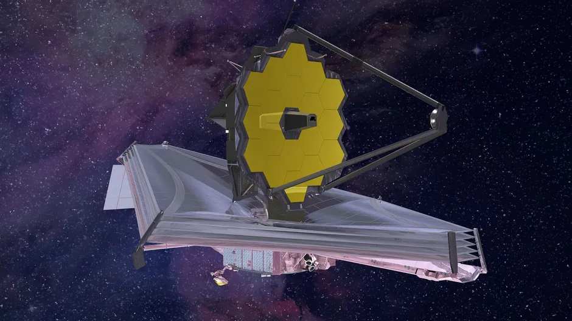

After going to space the main work of the "The James Webb Space Telescope" was to perfectly align it's all primary mirror. On 25 December 2021 after launched the Telescope was so technical that it took 3 months to align it's all the mirrors, and after investing this so much of time on 11 March it's mirrors got aligned but there were formal gossip that it's mirrors are still aligning by this point you can understand that the is going to be so much precised project, but anyways when on 11 March 2022 when all mirrors were almost aligned, there was a curiosity in all the scientist to take the first photo by the James Webb Space Telescope and by waiting 2 days they had taken the first picture by the telescope and after properly analysing it they published the photo on 16 March 2022 , this star is 2000 Light years far from the earth.
